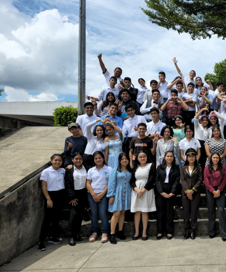
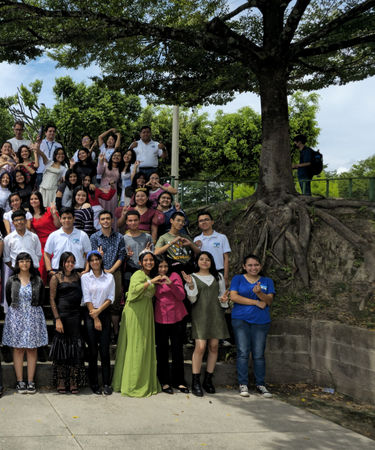

IT
Valores
Inglés
Inicio
Tu navegador no soporta el elemento de video.
Seniors
Annual
Debate
En el año
2025
participé en el
Seniors Annual Debate
, un evento escolar realizado completamente en inglés donde se discutió la moción:
“¿Debería apostarse por el turismo como la mejor estrategia económica a pesar de los problemas medioambientales?”
Junto a mi equipo defendimos la postura en
contra
de esta moción, argumentando que el crecimiento económico no debe comprometer la sostenibilidad del medio ambiente.
Gracias al trabajo en equipo, la preparación de argumentos sólidos y una comunicación clara,
ganamos el debate
, demostrando nuestras habilidades en
oratoria, pensamiento crítico y dominio del inglés.
Expo
de
Logros
2024
Este trabajo involucró áreas de robotica, programación y diseño de marca.
Nuestro
Robot
En mi segundo año trabajamos con nuestro Robot Seguidor de Líneas donde aprendímos programación en bloque. Además creamos una página web donde explicamos a detalle las funciones de este robot.
Mi
Aprendizaje
Este fue uno de los proyectos más grandes en el que he estado y me enseño como trabajar en un grupo más extenso designando roles. Además de que me ayudó a descubrir mi vocación como programador y expusimos nuestro trabajo a más de 100 persones en Inglés.
Device
Holder
Nuestro
Proceso
El proceso de crear un device holder fue una experiencia completa que combinó creatividad, aprendizaje y tecnología. Primero, se desarrolló el diseño del soporte teniendo en cuenta las dimensiones y la funcionalidad para sostener el dispositivo.
Luego, fue necesario aprender a usar
Tinkercad
, una herramienta de diseño 3D que permitió modelar digitalmente cada parte del objeto logrando un resultado adecuado. Finalmente, se procedió a la impresión 3D, donde el modelo virtual se transformó en un objeto físico mediante la impresora, observando cómo capa a capa se construía el soporte diseñado.
Los
Resultados
Nuestro proyecto llevó a cabo el desarrollo de un device holder diseñado para ofrecer comodidad, versatilidad y portabilidad. Este soporte puede utilizarse en distintos entornos y cuenta con la ventaja de poder llevarse como un llavero, facilitando su transporte y uso en cualquier momento.
Este proyecto fue posible gracias al trabajo en equipo, la colaboración constante y el intercambio de conocimientos entre los integrantes. Finalmente, los resultados fueron presentados en una exposición final en inglés, donde mostramos tanto el diseño como el proceso creativo y técnico detrás del producto.
Reading
Fair


Tu navegador no soporta video.
Book
Trailer
En nuestra participación en la Reading Fair, el equipo presentó una interpretación creativa del clásico Oliver Twist a través de un tráiler promocional con enfoque cinematográfico. La propuesta buscó transmitir la esencia de la obra de Charles Dickens de una manera moderna y atractiva, combinando el análisis literario con recursos visuales que captaran la atención del público.
Durante el proceso, utilizamos herramientas digitales como
Canva
para el diseño gráfico y
CapCut
para la edición de video, lo que nos permitió crear un resultado dinámico y visualmente impactante. Esta experiencia no solo fortaleció nuestras habilidades tecnológicas y creativas, sino que también nos motivó a conectar la literatura con los medios digitales, demostrando cómo las obras clásicas pueden reinterpretarse desde nuevas perspectivas.
Journey
Throught
History
¿
Qué
es
JTH
?
En la actividad Journey Through History (JTH), nuestro equipo tuvo la oportunidad de viajar en el tiempo a través del siglo XX. Cada grupo recibió distintos personajes históricos famosos, y a partir de ellos, creamos una obra de teatro completamente en inglés.
El reto consistió en entrelazar las historias y personalidades de figuras icónicas del siglo pasado dentro de una misma trama, combinando hechos reales con creatividad y dramatización. Durante el proceso, desarrollamos habilidades de investigación, expresión oral, trabajo en equipo y actuación, logrando una presentación final dinámica y educativa.
Journey Through History fue más que una actividad escolar: fue una experiencia que nos permitió aprender historia de una forma divertida, mientras mejorábamos nuestro dominio del inglés y fortalecíamos la confianza al hablar en público.
Mi
Inspiración
Durante la actividad Journey Through History (JTH) tuve la oportunidad de interpretar al pintor salvadoreño
Fernando Llort
, una figura que me inspiró profundamente por su manera de ver el arte como un puente entre la espiritualidad, la identidad y la comunidad.
Al conocer su historia, comprendí que para Llort el arte no era solo una forma de expresión estética, sino una manera de conectar con las raíces del pueblo salvadoreño y reflejar su esperanza, su fe y su cultura. Al interpretarlo, traté de entender su visión optimista y humana del mundo, esa que se plasma en los colores vivos y las formas armoniosas de su obra. A través de su perspectiva aprendí que el arte puede ser un lenguaje universal, capaz de transmitir paz, identidad y unión.
Representar a Fernando Llort fue una experiencia que me permitió ver la vida desde un enfoque más creativo y espiritual, y valorar cómo el arte puede inspirar a otros a mirar su entorno con nuevos ojos.
.png)
.png)
.png)
.png)


.png)